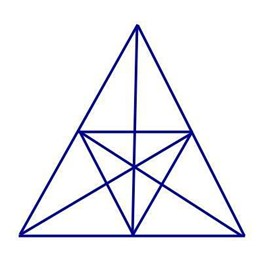

In the Figure Counting reasoning section, figure counting refers to the process of formation of a defined geometrical figure with the use of pieces of different designs. for the counting of figures, you have a shape or a figure. From the given shape you will have to identify a given known shape and count the number of times it is present in the given shape
Example :-How many Tringles in the below figure ?
Solution :-
There are a total of 47 triangles
How? we will divide this triangle into 3 equal triangles(triangle formed by connecting outer side to the center of the circle) and will count the number of triangles in each part and then by taking two or more parts together.
Number of triangles in one part: 4(non overlapping) + 3(overlapping) = 7 * 3 = 21
Number of triangles by taking two parts together: 8 = 8 * 3 = 24
Number of triangles by taking all three parts together: 2
Thus, total number of triangles in this puzzle are : 21+24+2= 47